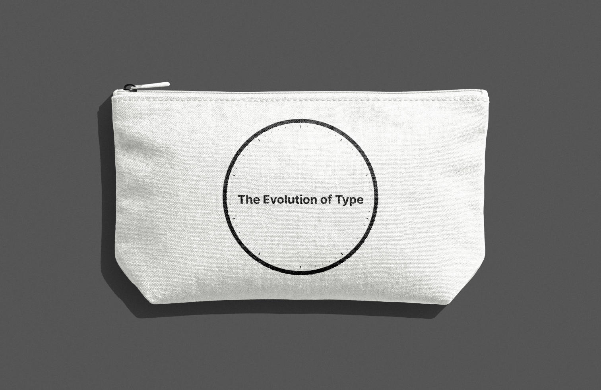

Challenge
Static history meets a digital audience.
Tony Seddon's The Evolution of Type: A Graphic Guide to 100 Landmark Typefaces is a comprehensive guide to historic typefaces, but traditional print reference books are inherently static and linear.
Process
From book concept to responsive prototype.
| Phase | Milestone Artifact | Key Focus | Link |
|---|---|---|---|
| 01Strategy | Content Audit | Mapping info architecture and key features | View Slide Deck ↗ |
| 02Concept | 2 Visual Directions | Exploring different colors and layouts | View Directions ↗ |
| 03Iteration | Core Page Designs | Building out one concept in more detail | View Flows ↗ |
| 04Prototype | High-Fidelity Figma | Interactive user flows and type components | View Prototype ↗ |
| 05Extension | Physical Merchandise | Translating brand identity into a physical mockup | View Mockup ↗ |
Prototype
Interactive typographic discovery across screen sizes.
I built a high-fidelity prototype focused on chronological exploration and in-depth typeface profiles.
Feature 01 — Chronological Timeline
Navigates the catalog chronologically by book chapters, pairing broad era overviews with contextual blurbs for every landmark typeface.
Feature 02 — Interactive Typeface Profiles
Offers deep dives into individual typefaces with detailed historical context and interactive hover states that spotlight specific anatomical nuances.
Feature 03 — Comprehensive Type Index
Provides a structured catalog of all 100 typefaces, organized systematically by chapter and historical timeline for rapid browsing.
Feature 04 — Type Guide & Visual Glossary
Breaks down type classifications with direct links to corresponding typeface profiles along with a glossary of key typographic terms.
Note: Due to timeline constraints, the prototype focuses on a curated selection of typefaces.
Brand Extension
Bridging digital visual identity with physical merchandise.
Going beyond the screen, I adapted the circular emblem and minimalist typography into a custom canvas pencil pouch mockup made for design students and typography enthusiasts.

Next Steps
Opportunities for future iterations.
Building Out the Rest of the Typeface Pages
Expand the prototype to feature the full catalog of 100 typefaces from Seddon's book for comprehensive chronological and categorical browsing.
Interactive Type Tester / Sandbox
Develop a dedicated live "playground" view where users can type custom sample strings, adjust optical size and tracking sliders, and test glyph sets dynamically.
Optimize Long-Form Content
Incorporate expandable detail drawers, collapsible timelines, and interactive annotations to make dense historical content blocks more engaging to explore.